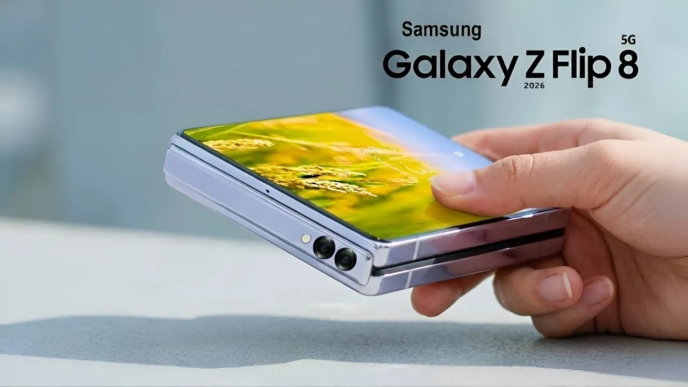

Samsung’s 2026 Foldable Strategy: Why the Galaxy Z Flip 8 is All About Ergonomics


As we dive into the world of foldable smartphones, Samsung is poised to take the lead with its 2026 strategy, and the Galaxy Z Flip 8 is at the forefront of this movement. At Ultimate Schooling, we're excited to explore the latest developments in foldable technology and what this means for the future of smartphones. With a strong focus on ergonomics, Samsung is set to revolutionize the way we interact with our devices, making them more intuitive, efficient, and enjoyable to use.
📋 Table of Contents
Introduction to Samsung's 2026 Foldable Strategy
We've seen significant advancements in foldable technology over the past few years, and Samsung has been a pioneer in this field. With the Galaxy Z Flip 8, Samsung is taking a bold step forward, prioritizing ergonomics and user experience. This approach is evident in the phone's design, which features a sleek, compact body and a dual external display that provides an immersive experience.
Galaxy Z Flip 8: A Focus on Ergonomics
The Galaxy Z Flip 8 is designed to fit comfortably in the user's hand, with a thinner and lighter body that makes it easy to carry around. The phone's cover screen features have been enhanced, allowing users to access essential information and perform tasks without needing to unfold the device. This attention to detail is a testament to Samsung's commitment to creating a seamless user experience.
RECOMMENDED FOR YOU
Check out more tech articles here →As we explore the Galaxy Z Flip 8's features, it's clear that ergonomics play a vital role in the phone's design. From the placement of the buttons to the curvature of the screen, every aspect of the phone has been carefully considered to provide an intuitive and comfortable user experience.
When it comes to foldable phones, ergonomics is key. A well-designed device can make all the difference in terms of usability and overall satisfaction. As Samsung continues to push the boundaries of foldable technology, we can expect to see even more innovative features and designs that prioritize the user experience.
Key Features and Specifications
The Galaxy Z Flip 8 is powered by the Exynos 2600 processor, which provides a significant boost in performance and efficiency. The phone also features a larger battery, which, combined with the power-efficient processor, offers improved battery life. Here are some key specifications:
| Feature | Specification |
|---|---|
| Processor | Exynos 2600 |
| Display | Dual external display, 6.7-inch main screen |
| Battery | 4000mAh |
| RAM | 12GB |
| Storage | 256GB, 512GB |
We expect the Galaxy Z Flip 8 to be unveiled at Samsung Unpacked in July 2026, where we'll get a closer look at the device's features and capabilities. With its focus on ergonomics and innovative design, the Galaxy Z Flip 8 is set to be a game-changer in the world of foldable smartphones.
Comparison with Other Foldable Phones
While Samsung is a leader in the foldable phone market, other manufacturers, such as Huawei, are also making significant strides. The Huawei P50 Pocket, for example, offers a unique design and feature set that competes with the Galaxy Z Flip 8. Here's a comparison of the two devices:
| Feature | Galaxy Z Flip 8 | Huawei P50 Pocket |
|---|---|---|
| Display | Dual external display, 6.7-inch main screen | 6.9-inch main screen, 1.04-inch cover screen |
| Processor | Exynos 2600 | Qualcomm Snapdragon 888 4G |
| Battery | 4000mAh | 4000mAh |
| RAM | 12GB | 8GB, 12GB |
| Storage | 256GB, 512GB | 128GB, 256GB, 512GB |
As we look to the future of foldable technology, it's clear that Samsung's focus on ergonomics and innovative design will play a significant role in shaping the industry. With the Galaxy Z Flip 8, Samsung is pushing the boundaries of what's possible with foldable phones, and we can't wait to see what's next.
Conclusion
In conclusion, Samsung's 2026 foldable strategy is all about ergonomics, and the Galaxy Z Flip 8 is a testament to this approach. With its sleek design, dual external display, and powerful Exynos 2600 processor, the Galaxy Z Flip 8 is set to revolutionize the way we interact with our smartphones. As we look to the future of foldable technology, one thing is clear: ergonomics will play a vital role in shaping the industry, and Samsung is at the forefront of this movement.
Ultimate Schooling Editorial Team
Dedicated to bringing you the most accurate and up-to-date tech education content. Our team ensures every article meets the highest standards of quality.
Leave a Comment
Your email address will not be published. Required fields are marked *